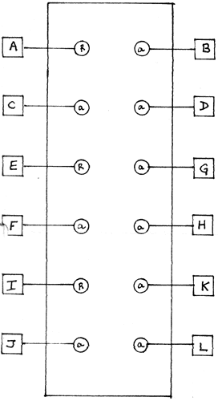

|
Triple Bi-Directional Router
 pc board No. R-4 Two audio sources, one low in pitch, the other high, are needed to test the Router. Also needed is a source of voltage of more than 4.5 Volts (+) such as is available from the pulse outputs (red jack) of the NEGATIVE SLEW, COMPARATOR (knob turned fully CW), the "end" pulse out of the ENVELOPE GENERATOR, the pulse output of the POSITIVE SLEW, the PROGRAMMER, SEQUENCER reset to stage 1, etc... Plug the high pitched audio source (white noise, VCO or SLEWS, etc.) into A2 of one of the three ROUTERS. Plug the low pitched audio source (pink noise, VCO or SLEWs, etc...) into A1. Monitor ROUTER jack B through loudspeakers. You should now hear the low audio source, at the same amplitude level as the original. Patch the ROUTER'S red input jack with the source of +4.5 V. or above. At the moment the connection was made, the ROUTER should have switched to the lower pitched audio source. This completes the test for the ROUTER being tested. Repeat the above procedure for the remaining ROUTERS. Note that the Router is truly bi-directional since B can be used either as an input or as an output. If B is used as an output, then Al and A2 must be used as inputs, and vice versa.Please avoid plugging outputs of various modules into both the B jack and either one of the A jacks. This is to be avoided since effectively it is the same as plugging two outputs together, therefore shorting them out one against the other.
|